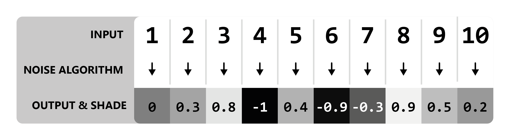

How Noise Samplers Work¶
Noise Basics¶
Let’s begin with a demonstration displaying the most basic process of ‘creating’ noise. We will use a noise algorithm that produces white noise, and pass numbers 1 to 10 into it. (Understanding how exactly algorithm produces specific values is not essential in understanding the general idea.)
Conventionally, the values outputted by the algorithms used by Terra will be within a range of -1 to 1, so they can be visualized as a shade like so:

Model
Results
{kind=link}
Simple, right? All the algorithm does is convert one number to another randomized number.
Note
Outputs have been rounded to one decimal place for simplicity, in practice there is more precision.
Whole number inputs have been used for the sake of demonstration, noise algorithms will still work the same way with inputs like 1.5.
Seeds¶
Seeds are an additional noise algorithm input:
Seeds provide a way of getting a whole new set of random values from the same inputs. Seeds must be a whole number, meaning 5324 would
be a valid seed, but 231.23 would not.
Here is an example using two different seeds to produce different outputs, using the same inputs from the example above.
White noise with seed = 0
White noise with seed = 1

One usage of seeds that you might be familiar with is minecraft world seeds. A vanilla minecraft world seed gets inserted into the many noise algorithms that govern vanilla world generation, resulting in completely different worlds per seed.
Vanilla Minecraft World Generation Trivia
In previous versions of Minecraft, Some noise algorithms used the same seed for every world (meaning they don’t factor in the world seed), which resulted in every world generating a certain characteristic the exact same way. One notable example - the algorithm that controls bedrock formation used a static seed for every world, leading every world to share the same random configuration of bedrock.
Noise Samplers¶
The values being input into a noise noise algorithm are typically positions in a world. For example the values 1 to 10 might be coordinates on the X axis.
When used this way, a noise algorithm effectively provides a random value for any given position in the world as described by its coordinates.
We call a noise algorithm used this way a noise sampler.
Passing a position into a noise sampler is also called ‘sampling’ that position. A ‘sample’ is a singular output value for a given position, and a set of samples is called noise.
Multiple Dimensions¶
In the examples above only one axis of coordinates is passed as input, however noise samplers utilize multiple dimensional coordinates to specify input positions.
Providing two dimensional coordinates means sampling in 2D.
The X and Z axes are used for coordinates passed into 2D noise samplers.
In a new example, let’s use a range of 1 - 3 for both X and Z, giving us a total of 9 samples (3 x 3).
Exact coordinate values are omitted for the sake of simplicity.
Two Dimensional Model
Results

Adding an extra dimension allows noise to be depicted as a 2D grid, rather than a list of values as was shown earlier.
Taking this experiment further, let’s use a larger sample area of 64 x 64:

What we have done here is essentially produced a random image using a white noise sampler.
By default, we will assume the above format of visualizing noise in 2D as an image, where each output value represents a grayscale pixel.
Higher Dimensions¶
Many noise algorithms support many more than two inputs (excluding seed), which can be treated as the number of dimensions,
however in Terra, noise samplers only support either two or three dimensions. 3D noise samplers use axes X, Y, and Z.
Salt¶
The seed a noise sampler will use is set to the world seed plus a value called salt. Salt is a number you can specify when defining noise sampler configurations and allows noise samplers using the same algorithm to produce different sets of output values.
Setting different salts for noise samplers that would otherwise be identical is useful in order to prevent different things from potentially being distributed the same way in the same location.
Determinism¶
Given any input, the output of a noise sampler must always be the same. Because of this, we can reliably re-produce any ‘random’ results we get from noise samplers by feeding it the same input. In more formal terms, this means that noise samplers must be deterministic.
Coherent Noise¶
Thus far, we have only covered noise looks like tv-static, which is fine for many applications. But how can we get noise capable of producing smooth rolling hills, vast mountains, and other structured random generation? Let’s introduce a new category of noise samplers called ‘coherent noise’.
What’s The Difference?¶
The main difference that separates what we will call random noise from coherent noise is that while random noise samplers produce noise with no apparent structure, coherent noise samplers produce ‘structured’ noise, where sampling nearby positions produce similar output values.
To get a better idea of the difference, here is a visualization of two different 2D sampled noise samplers that both share the same inputs:
Random
Coherent

As you can see, the coherent noise example has a discernible structure where output values are smooth, compared to the random noise example where there’s no apparent structure. The coherent noise algorithm used in the sampler above is known as simplex noise, and is one of the many flavors of noise provided in Terra.
Flavors of Noise¶
There are many other variants and implementations of noise samplers, such as the white noise and simplex noise samplers. Each has their own quirks, behaviors, and applications, however in general they all follow the same principle of providing values for each position.
Here is a small list of the most commonly used noise samplers in Terra:
Simplex Noise
Cellular / Voronoi / Worley Noise
White Noise
Value Noise
Domain Warp
FBM
Expression
A full list of available noise samplers can be found at the NoiseSampler documentation.